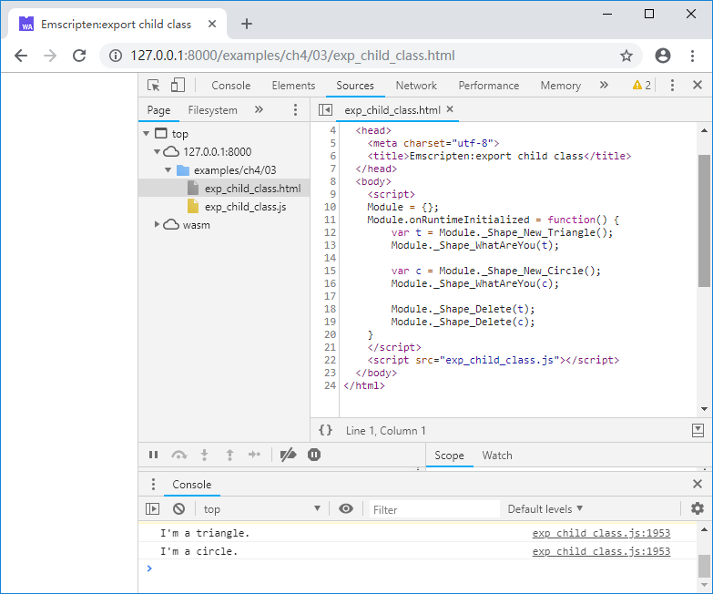

4.3 使用C接口导出C++对象
在Emscripten中使用Embind和WebIDL Binder都可以将C++对象导出至JavaScript，但笔者在实际工程中并没有使用这两种方法，一方面是因为这些方法是侵入式的，另一方面更重要的是，笔者对于“是否应该使用C++类作为库接口”本身持保留态度——设计出一个糟糕的C++接口的可能性远高于设计出一个糟糕的C接口——当然这并不意味着反对使用C++，事实上C++是笔者日常使用的主力语言，只不过从接口设计的角度来说，笔者认为应该避免让C++类的复杂性溢出库边界，因此使用C接口导出C++对象就成了自然的选择。
我们先定义一个简单的类CSum，它有一个公有函数Inc()用于执行累加操作，一个私有成员m_nSum用于存放累加值：
//exp_class.cpp
class CSum {
public:
CSum() {
printf("CSum::CSum()\n");
m_nSum = 13;
}
virtual ~CSum() {
printf("CSum::~CSum()\n");
}
int Inc(int i){
printf("CSum::Inc()\n");
m_nSum += i;
return m_nSum;
}
private:
int m_nSum;
};
接下来我们定义两个导出函数，分别用于执行CSum类的new和delete操作：
//exp_class.cpp
struct Sum;
EM_PORT_API(struct Sum*) Sum_New() {
CSum *obj = new CSum();
return (struct Sum*)obj;
}
EM_PORT_API(void) Sum_Delete(struct Sum* sum) {
CSum *obj = (CSum*)sum;
delete obj;
}
Sum_New()的返回值和Sum_Delete()的参数，事实上就是CSum对象在堆中的地址。这里额外定义了空结构体Sum，并使用Sum*作为CSum对象的指针类型，既避免了使用void*导致的类型不明，又可以在编译阶段提供强制类型检测。
接下来我们定义导出函数Sum_Inc() ，它的首个参数是一个Sum*型的指针（既CSum对象的地址）：
//exp_class.cpp
EM_PORT_API(int) Sum_Inc(struct Sum* sum, int i) {
CSum *obj = (CSum*)sum;
return obj->Inc(i);
}
至此就完成了CSum类的导出，在JavaScript中调用Sum_New()创建CSum对象并调用其公有成员函数：
//exp_class.html
Module.onRuntimeInitialized = function() {
var s = Module._Sum_New();
console.log(Module._Sum_Inc(s, 29));
Module._Sum_Delete(s);
}
浏览页面后控制台输出如下：

tips 由于内存模型的差异，C++中的
对象和JavaScript中的对象结构完全不同，Module._Sum_New()返回的是新建的CSum对象在Module堆中地址，而非JavaScript对象。这种方法本质上是将C++对象的地址用作JavaScript和C++沟通的桥梁。
显然带有继承关系的子类对象也可以用同样的方法导出，例如：
//exp_child_class.cpp
class CShape {
public:
CShape() {};
virtual ~CShape() {};
virtual void WhatAreYou() = 0;
};
class CTriangle : public CShape {
public:
CTriangle() {}
virtual ~CTriangle() {}
void WhatAreYou(){ printf("I'm a triangle.\n") ;}
};
class CCircle : public CShape {
public:
CCircle() {}
virtual ~CCircle() {}
void WhatAreYou(){ printf("I'm a circle.\n") ;}
};
//-----------------------------------
struct Shape;
EM_PORT_API(struct Shape*) Shape_New_Triangle() {
CTriangle *obj = new CTriangle();
return (struct Shape*)obj;
}
EM_PORT_API(struct Shape*) Shape_New_Circle() {
CCircle *obj = new CCircle();
return (struct Shape*)obj;
}
EM_PORT_API(void) Shape_Delete(struct Shape* shape) {
CShape *obj = (CShape*)shape;
delete obj;
}
EM_PORT_API(void) Shape_WhatAreYou(struct Shape* shape) {
CShape *obj = (CShape*)shape;
obj->WhatAreYou();
}
在JavaScript中分别创建2个子类对象：
//exp_child_class.html
Module.onRuntimeInitialized = function() {
var t = Module._Shape_New_Triangle();
Module._Shape_WhatAreYou(t);
var c = Module._Shape_New_Circle();
Module._Shape_WhatAreYou(c);
Module._Shape_Delete(t);
Module._Shape_Delete(c);
}
浏览页面后控制台输出如下：
